Deskripsi
Libra merupakan zodiak yang tidak menyukai konflik, mereka merasa senang memiliki kehidupan yang tentram, damai serta penuh dengan keindahan.Libra adalah orang yang romantis.
Kompatibel
Gemini dan Leo sangat cocok dalam hal kepribadian, karena mereka memiliki pandangan dan emosional yang sama, dan bentuk percakapan mereka yang tidak membosankan. Tingkat kecocokan zodiak ini 30% Libra tidak cocok dengan zodiak Scorpio dan Cancer, karena sifat scorpio yang kasar, agresif, serta terus terang, sedangkan cancer terlalu melankolis dan penuh drama. Tingkat ketidakcocokan mereka 30%
Tokoh Zodiak

Prilly Latuconsina
15 Oktober

Bruno Mars
8 Oktober

Will Smith
25 September